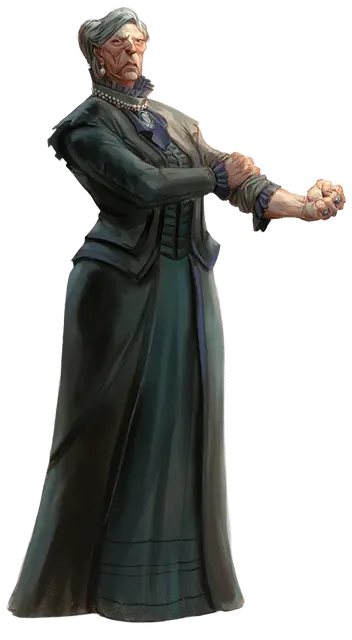

Герцогиня Таламра Вантампур
Duke Thalamra Vanthampur
Средний Гуманоид (Человек), законно-злой, именной НИП

Класс Доспеха 10
Хиты 78 (12к8 + 24)
Скорость 30 футов
| мод | спас | ||
|---|---|---|---|
| СИЛ | 17 | +3 | +3 |
| ЛОВ | 10 | +0 | +0 |
| ТЕЛ | 15 | +2 | +2 |
| мод | спас | ||
|---|---|---|---|
| ИНТ | 13 | +1 | +1 |
| МДР | 16 | +3 | +3 |
| ХАР | 18 | +4 | +4 |
Навыки Запугивание +6, Обман +6, Проницательность +5, Религия +3
Чувства тёмное зрение 120 футов (см. дьявольское зрение ниже), пассивное Восприятие 13
Языки Общий, Инфернальный
Опасность 4 (1100 опыта)
Бонус мастерства +2
Особенности
Дьявольское зрение. Магическая тьма не мешает темному зрению Таламры.
Темная преданность. Таламра совершает с преимуществом спасброски от испуга и очарования.
Действия
Мультиатака. Таламра дважды использует мистический заряд или совершает два безоружных удара.
Мистический заряд (заговор). Дальнобойная атака заклинанием: +6 к попаданию, дистанция 120 футов, одна цель. Попадание: 9 (1к10 + 4) урона силовым полем.
Безоружный удар. Рукопашная атака оружием: +5 к попаданию, досягаемость 5 футов, одна цель. Попадание: 4 дробящего урона.
Реакции
Адское возмездие (заклинание 1-го уровня; 2/день). Когда Таламре наносит урон существо в пределах 60 футов от неё, которое она видит, это существо окутывает адское пламя. Существо должно совершить спасбросок Ловкости Сл 14. Оно получает 16 (3к10) урона огнём при провале или половину этого урона при успехе.
Описание
Таламра Вантампур — коварная дьяволопоклонница возрастом под семьдесят лет, способная заглянуть в глаза адской гончей, не вздрогнув. Она полнотела, а сильные руки выдают, что начинала она как простая работница. Юность она провела в подвалах и канализации Врат Балдура, где чинила трубы и вычищала городские отбросы.
Из таких вот низов Таламра выбилась в управляющие городского водопровода и канализации. Теперь она одевается в роскошные платья, подобающие её статусу герцогини Врат Балдура.
Именно Таламра подстроила исчезновение верховного герцога Ульдера Рейвенгарда, чтобы добиться своей главной цели — стать верховной герцогиней. В свободное от политических интриг время она проворачивает тайные дела в подземельях под виллой.
Таламра трижды овдовела, но каждому из покойных мужей подарила по сыну.